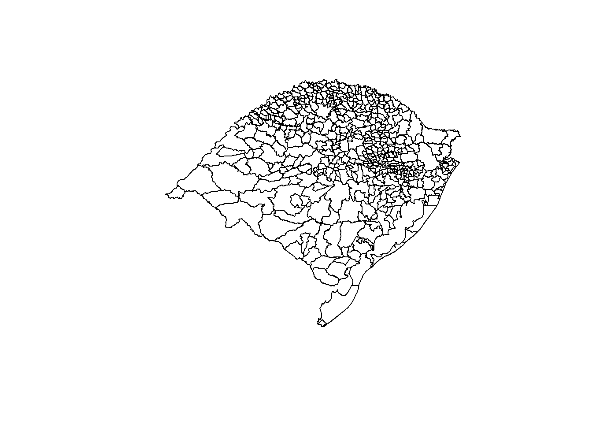
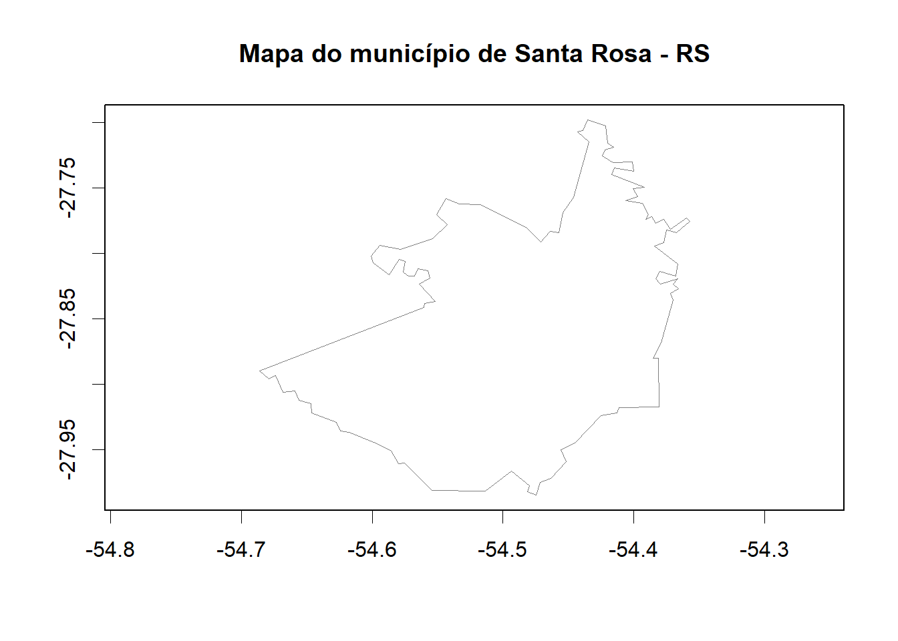
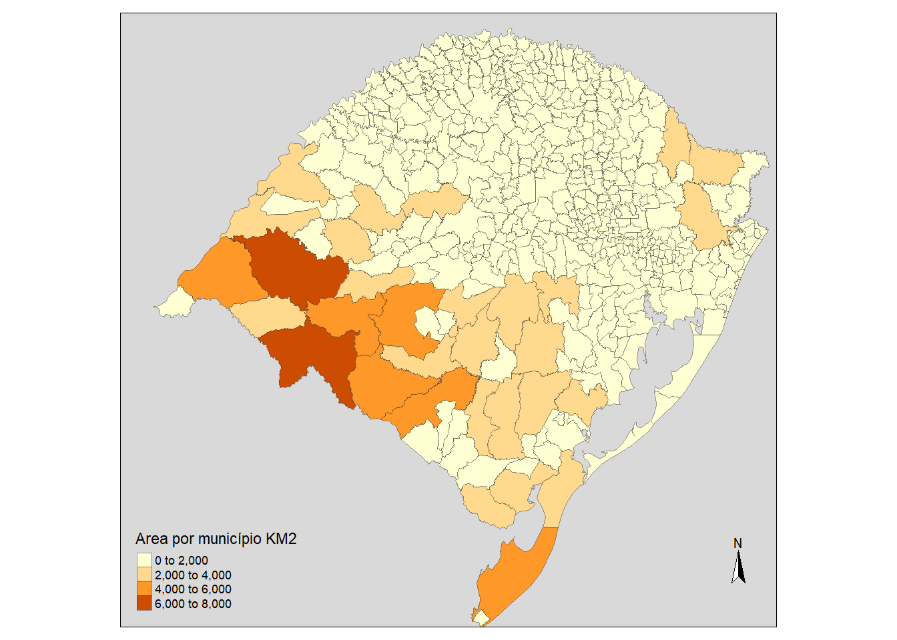
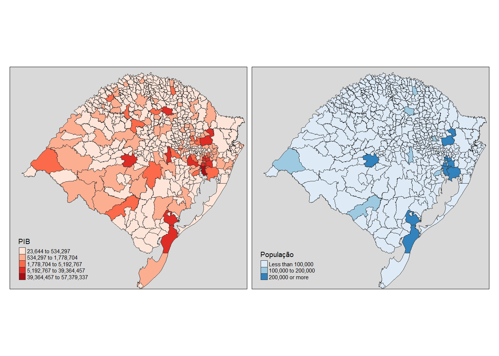
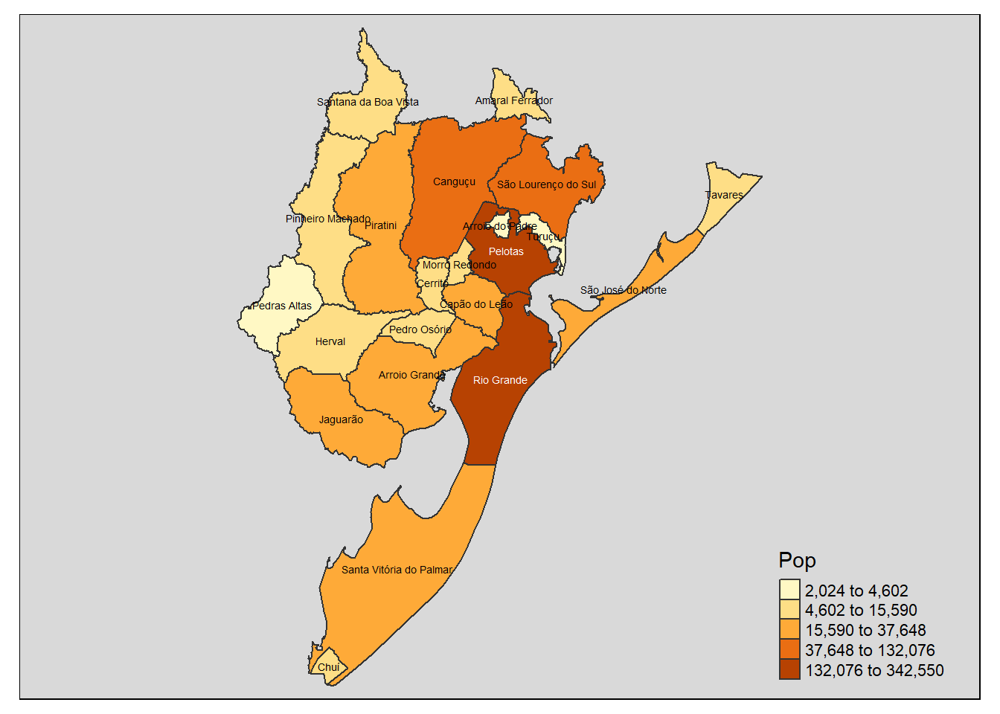

Capítulo 5 Mapas
Este capítulo almeja levantar o ferramental básico para a construção de mapas simples no RStudio. Ainda, interessa demonstrar os comandos para a manipulação destes tipos de bases de dados, inclusive possibilitando a junção de indicadores de municípios, regiões e países. Estes dados podem ser advindos de institutos de pesquisas ou mesmo dados criados pelo estudante em suas análises.
Os pacotes utilizados neste capítulo são: tmap, maptools,
tmap e rgdal.
5.1 Introdução aos shapes
Existem vários softwares específicos para a produção de mapas, sejam produtos comerciais ou no formato software livre. A grande vantagem da utilização do R para criação de mapas é a utilização dos shapes disponibilizadas para vários programas.
Denominam-se shapes os arquivos que contém os elementos gráficos, em formato de ponto, linhas ou polígonos, contendo coordenadas geográficas para um elemento para que possa ser transformado em mapa. O shape é formado por três arquivos principais individuais que armazenam os dados: o arquivo “.shp”, “.shx” e “.dbf”. Além disto, podem ser acompanhados de arquivos “.prj”, o “.sbn” e o “.sbx” (Semace 2018).
Os shapefiles podem ser obtidos de várias fontes oficiais, como institutos de pesquisa e universidades. A seguir alguns links para download:
https://mapas.ibge.gov.br/bases-e-referenciais/bases-cartograficas/malhas-digitais.html
http://dados.gov.br/dataset/malha-geometrica-dos-municipios-brasileiros
Forest Gis: http://forest-gis.com/2009/04/base-de-dados-shapefile-do-brasil-todo.html/
FEPAM: http://www.fepam.rs.gov.br/biblioteca/geo/bases_geo.asp
No exemplo abaixo, é utilizado um shape proveniente do IBGE representando os municípios do Estado do Rio Grande do Sul. Ao shape denominado municipios_IBGE será dado o nome de MAPA_RS:
require(maptools)
require(tmap)
require(rgdal)
MAPA_RS=readShapeSpatial('D:/Github/livroravancado/mapas/bases/municipios_IBGE/municipios_IBGE.shp')Utilizando a função summary podem ser observados os itens que compõe este objeto, em especial a área do município (AREA_1), o seu nome (NOME) o seu código IBGE (Cod_ibge) e o seu nome com acentuação (Label_N):
## Object of class SpatialPolygonsDataFrame
## Coordinates:
## min max
## x -57.64426 -49.6921
## y -33.75247 -27.0810
## Is projected: NA
## proj4string : [NA]
## Data attributes:
## MSLINK MAPID AREA_1 PERIMETRO_
## Min. :4807 Min. :99 Min. : 27.54 Min. : 29.24
## 1st Qu.:4931 1st Qu.:99 1st Qu.: 124.50 1st Qu.: 64.62
## Median :5055 Median :99 Median : 237.02 Median : 92.32
## Mean :5083 Mean :99 Mean : 541.02 Mean :124.56
## 3rd Qu.:5179 3rd Qu.:99 3rd Qu.: 503.48 3rd Qu.:145.61
## Max. :5823 Max. :99 Max. :7803.97 Max. :584.72
##
## NOME SEDE LATITUDESE LONGITUDES
## ACEGUA : 1 Min. :1 Min. :-33.69 Min. :-57.55
## AGUA SANTA: 1 1st Qu.:1 1st Qu.:-29.61 1st Qu.:-53.50
## AGUDO : 1 Median :1 Median :-28.98 Median :-52.43
## AJURICABA : 1 Mean :1 Mean :-28.96 Mean :-52.61
## ALECRIM : 1 3rd Qu.:1 3rd Qu.:-27.99 3rd Qu.:-51.68
## ALEGRETE : 1 Max. :1 Max. :-27.16 Max. :-49.73
## (Other) :491
## AREA_TOT_G Cod_ibge Label_N
## Min. : 27.54 Min. :4300034 Aceguá : 1
## 1st Qu.: 124.50 1st Qu.:4306106 Água Santa: 1
## Median : 237.02 Median :4312104 Agudo : 1
## Mean : 541.02 Mean :4311877 Ajuricaba : 1
## 3rd Qu.: 503.48 3rd Qu.:4317400 Alecrim : 1
## Max. :7803.97 Max. :4323804 Alegrete : 1
## (Other) :491Note que este objeto pertence a uma classe diferente (SpatialPolygonsDataFrame), indicando que é constituída especialmente de um conjunto de polígonos para a construção de mapas conjuntamente com o carregamento de dados.
A seguir, a função plot() pode ser utilizada para a plotagem da malha carregada:

Um exercício simples é a filtragem dos dados do shape pelo nome do município, obtendo assim apenas o mapa da(s) unidade(s) escolhida(s):
plot(MAPA_RS[MAPA_RS$NOME =='SANTA ROSA',],
axes="TRUE", main="Mapa do município de Santa Rosa - RS", border=gray(0.5), lwd=.5)
5.2 Pacote tmap
5.2.2 Melhorando a visualização
tm_shape(MAPA_RS)+
tm_fill("AREA_1", auto.palette.mapping=FALSE, title="Area por município KM2")+
tm_format_World()+
tm_style_grey()+
tm_legend(
position=c("left","bottom"))+
tm_compass()+
tm_scale_bar()+
tm_borders(alpha=.5)
5.2.3 Opções de layout
As opções de tm_layout:
- tm_format_World
- tm_format_World_wide
- tm_format_Europe
- tm_format_Europe2
- tm_format_Europe_wide
- tm_format_NLD
- tm_format_NLD_wide
- tm_format_NLD_wide
5.2.4 Opções de Style
As opções de tm_style:
- tm_style_white
- tm_style_gray
- tm_style_natural
- tm_style_grey
- tm_style_cobalt
- tm_style_col_blind
- tm_style_albatross
- tm_style_beaver
- tm_style_bw
- tm_style_classic
5.2.5 Adicionando dados ao mapa
#Carrega a planilha com as informações
RS_2013 <- read.csv2("D:/Github/livroravancado/mapas/RS_2013.csv")
head(RS_2013)## Label_N COREDE CD_GEOCMU IDESE_2013 POUPANCA
## 1 Alto Alegre Alto da Serra do Botucaraí 4300554 0.7973015 NA
## 2 Barros Cassal Alto da Serra do Botucaraí 4302006 0.6103698 7647609
## 3 Campos Borges Alto da Serra do Botucaraí 4304101 0.7352055 NA
## 4 Espumoso Alto da Serra do Botucaraí 4307500 0.7929686 45673907
## 5 Fontoura Xavier Alto da Serra do Botucaraí 4308300 0.6336514 13985159
## 6 Gramado Xavier Alto da Serra do Botucaraí 4309159 0.6578416 1119359
## OP_CREDITO OBRIGACOES._RECEBIMENTO DEP_A_VISTA_PRIV DEP_A_VISTA_GOV
## 1 NA NA NA NA
## 2 27295139 5931 2019686 1291827
## 3 NA NA NA NA
## 4 230697134 66237 5961499 1339496
## 5 54390691 4177 1633176 550883
## 6 2073680 0 231993 320742
## DEP_PRAZO COOP_CRED CEF BANCO_COM N_VINCULOS_EMP DENS_DEM_HABKM2
## 1 NA NA NA NA 502 15.90284
## 2 795466 NA NA 2 1115 17.09519
## 3 NA NA NA NA 610 15.31040
## 4 21291570 1 1 3 4856 19.54499
## 5 4970880 NA NA 3 1868 18.14505
## 6 0 NA NA 1 341 18.64154
## IMPOSTOS AREA_KM2 PIB_PERC PIB POPULACAO
## 1 2894.464 114.445 30800.00 57164.80 1811
## 2 5116.998 648.896 12392.47 142240.75 11051
## 3 4260.816 226.578 21369.18 76052.90 3679
## 4 45015.841 783.065 35927.37 566574.63 15589
## 5 4949.119 583.465 12017.46 131531.05 10566
## 6 1172.871 217.525 14484.65 60372.01 3728#Une a base de dados da planilha com o mapa pelo nome do município
RS_2013_MAPA=merge(MAPA_RS,RS_2013,by="Label_N", all.x=T) tm_shape(RS_2013_MAPA) +
tm_polygons(c("PIB", "POPULACAO"),
style=c("kmeans","fixed"),
palette=list("Reds", "Blues"),
auto.palette.mapping=FALSE,
breaks=list(quantile(RS_2013_MAPA$POPULACAO),c(-Inf,100000,200000,Inf)),
title=c("PIB", "População")) +
tm_format_World() +
tm_style_grey()
tm_shape(RS_2013_MAPA[RS_2013_MAPA$COREDE =='Sul',]) +
tm_polygons("POPULACAO", title="Pop", style="kmeans", text="Label_N") +
tm_facets("COREDE") +
tm_text("Label_N",scale=0.45)+
tm_style_grey()
Referências
Semace. 2018. «Shape – Definições e Conversão». http://www.semace.ce.gov.br/2011/06/shape-definicoes-e-conversao/.